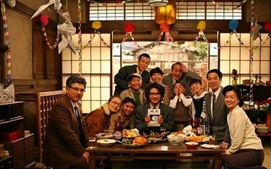

新闻说8月1日有日全食，于是好多人开始期待。会是怎样一种景象呢？太阳在那一刻突然消失，像是白天与黑夜之间，不再有夕阳下拉长的背影？ 一直以来，提到夕阳，似乎总是和幸福的短暂联系在一起。好像整个漫长的白天同黑夜都和幸福无关一般，所有的美好都只缱绻于清晨的曦光和黄昏的余辉里。曾有一阵子觉得每个阳光灿烂的日子都是那样不真实，只有到黄昏，是时候停下脚步，才能有清醒的宁静 不喜欢阴郁的天气才来到北京，却发现这里的阳光并没有想象中那般透亮。因为污染的关系，阳光总是包裹着一层灰白甚至发黄的雾气，就像看不清的未来。或许大城市都是一样的吧，就像东京铁搭注目下的三丁目，还会有影片《永远的三丁目的夕阳》中那么多感动到让人落泪的故事么？ 等待了两年才盼来《永远的三丁目的夕阳。续》却成为了终章。制作组宣布不会再拍第三部。其实这倒是我期望的结果，再拍下去，恐怕很难再在同一个地方找到那么多朴实的感动了。比如今天东京的孩子们，还会对着电扇“啊啊~”，然后听风把自己的声音吹成颤音么；还会把妈妈做的衣服当成最漂亮的礼物么；还会把“修养”当成美国点心么；还会自己攒零钱，只为了登上东京铁塔么；邻居们，还会聚集到你家里，一起等待通知你获奖的来电么；又有多少女孩，能像广美那样凝视根本不存在的戒指，流着泪说“好美”；又有多少人，会把每年的芥川奖当成过节。 这是最美的回忆，也只是回忆，如同电影泛黄的色调。在沐浴着夕阳的昭和风貌街道上，处处弥漫着最纯真的情感。没有高楼大厦的东京，有的只是宽广的天空和浓浓的市井风情。那时的东京铁塔是唯一的高层建筑，那时的日本桥下泛着青色的波光。就像电影里不断提到的：“这个国家就要变了”，那时的人们还只是欣喜地感受着东京的变化，以完全积极的心态，却没想到，若干年后的今天，我们再也难以寻找到温情的往日景象，单是昭和街道的风貌，也要靠电脑合成来完成。 同样的夕阳，不同的背景。还好，在夕阳的余晖里，我们可以坐下来怀念一下从前，以一种温暖的心境。
